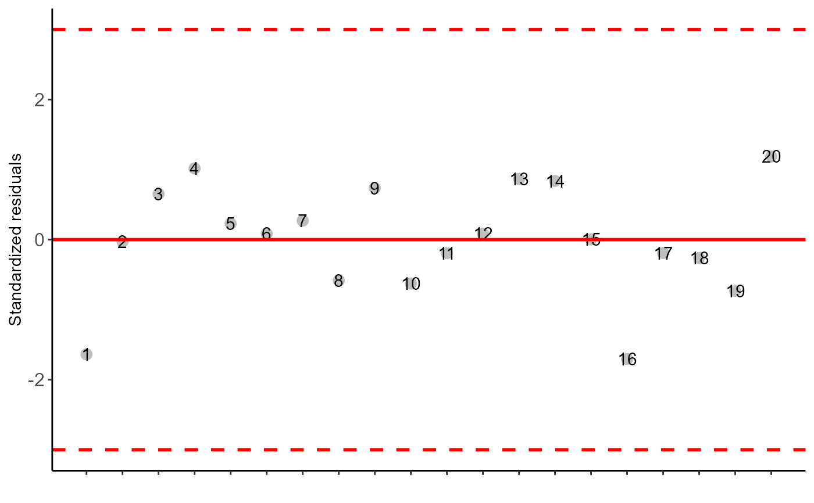
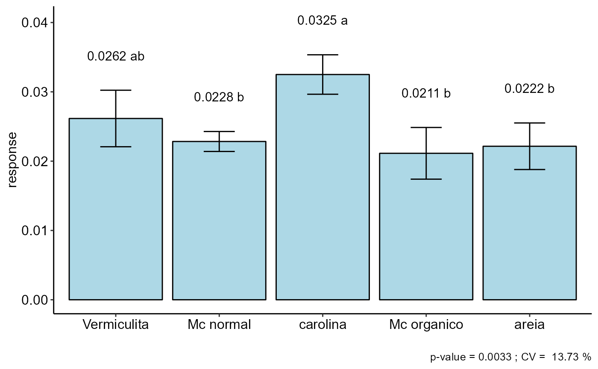
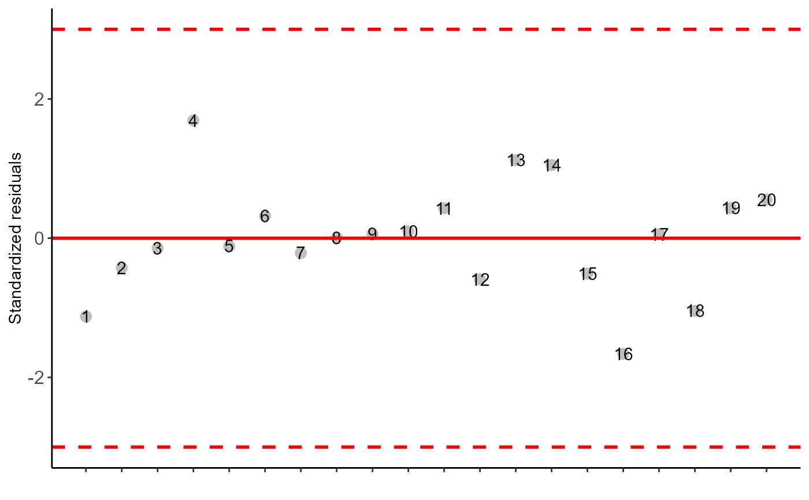
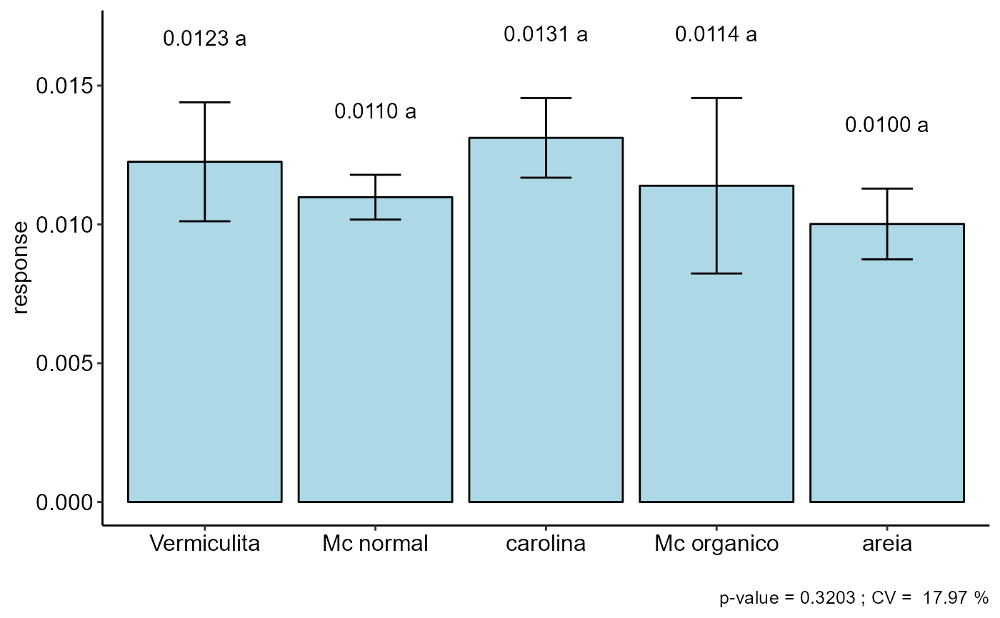
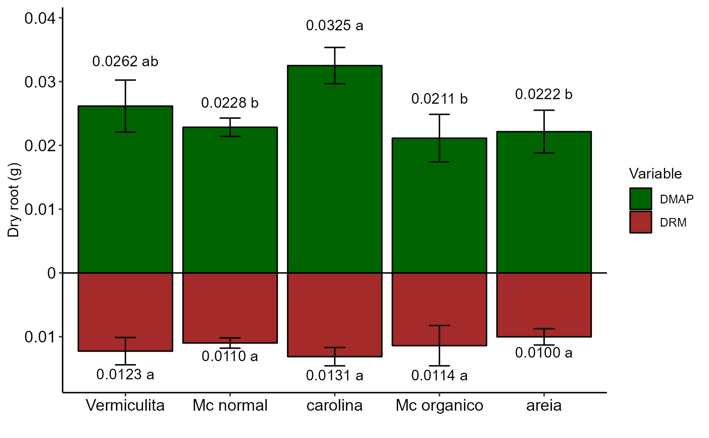

barplot_positive.RdColumn chart with two variables that assume a positive response and represented by opposite sides, such as dry mass of the area and dry mass of the root
barplot_positive( a, b, ylab = "Response", var_name = c("Var1", "Var2"), legend.title = "Variable", fill_color = c("darkgreen", "brown") )
| a | Object of DIC, DBC or DQL functions |
|---|---|
| b | Object of DIC, DBC or DQL functions |
| ylab | Y axis names |
| var_name | Name of the variable |
| legend.title | Legend title |
| fill_color | Bar fill color |
The function returns a column chart with two positive sides
When there is only an effect of the isolated factor in the case of factorial or subdivided plots, it is possible to use the barplot_positive function.
Gabriel Danilo Shimizu, shimizu@uel.br
#> #> ----------------------------------------------------------------- #> Normality of errors #> ----------------------------------------------------------------- #> Method Statistic p.value #> Shapiro-Wilk normality test(W) 0.9429864 0.2728826 #>#> As the calculated p-value is greater than the 5% significance level, hypothesis H0 is not rejected. Therefore, errors can be considered normal#> #> ----------------------------------------------------------------- #> Homogeneity of Variances #> ----------------------------------------------------------------- #> Method Statistic p.value #> Bartlett test(Bartlett's K-squared) 4.070401 0.396562 #>#> As the calculated p-value is greater than the 5% significance level, hypothesis H0 is not rejected. Therefore, the variances can be considered homogeneous#> #> ----------------------------------------------------------------- #> Independence from errors #> ----------------------------------------------------------------- #> Method Statistic p.value #> Durbin-Watson test(DW) 1.572708 0.03849032 #>#>#> #> ----------------------------------------------------------------- #> Additional Information #> ----------------------------------------------------------------- #> #> CV (%) = 13.73 #> R-squared = 0.84 #> Mean = 0.025 #> Median = 0.0241 #> Possible outliers = No discrepant point #> #> ----------------------------------------------------------------- #> Analysis of Variance #> ----------------------------------------------------------------- #> Df Sum Sq Mean.Sq F value Pr(F) #> trat 4 3.413717e-04 8.534292e-05 7.2705205 0.003259252 #> bloco 3 1.506425e-05 5.021417e-06 0.4277837 0.736759950 #> Residuals 12 1.408586e-04 1.173821e-05 #>#> As the calculated p-value, it is less than the 5% significance level. The hypothesis H0 of equality of means is rejected. Therefore, at least two treatments differ#> #> ----------------------------------------------------------------- #> Multiple Comparison Test #> ----------------------------------------------------------------- #> resp groups #> carolina 0.03250000 a #> Vermiculita 0.02615625 ab #> Mc normal 0.02283750 b #> areia 0.02215000 b #> Mc organico 0.02113125 b #>#> #> #>#> #> ----------------------------------------------------------------- #> Normality of errors #> ----------------------------------------------------------------- #> Method Statistic p.value #> Shapiro-Wilk normality test(W) 0.9836814 0.9723826 #>#> As the calculated p-value is greater than the 5% significance level, hypothesis H0 is not rejected. Therefore, errors can be considered normal#> #> ----------------------------------------------------------------- #> Homogeneity of Variances #> ----------------------------------------------------------------- #> Method Statistic p.value #> Bartlett test(Bartlett's K-squared) 8.452343 0.076345 #>#> As the calculated p-value is greater than the 5% significance level, hypothesis H0 is not rejected. Therefore, the variances can be considered homogeneous#> #> ----------------------------------------------------------------- #> Independence from errors #> ----------------------------------------------------------------- #> Method Statistic p.value #> Durbin-Watson test(DW) 1.826611 0.1152517 #>#> As the calculated p-value is greater than the 5% significance level, hypothesis H0 is not rejected. Therefore, errors can be considered independent#> #> ----------------------------------------------------------------- #> Additional Information #> ----------------------------------------------------------------- #> #> CV (%) = 17.97 #> R-squared = 0.49 #> Mean = 0.0116 #> Median = 0.0112 #> Possible outliers = No discrepant point #> #> ----------------------------------------------------------------- #> Analysis of Variance #> ----------------------------------------------------------------- #> Df Sum Sq Mean.Sq F value Pr(F) #> trat 4 2.263485e-05 5.658712e-06 1.3123500 0.3203367 #> bloco 3 4.997083e-06 1.665694e-06 0.3863024 0.7648958 #> Residuals 12 5.174271e-05 4.311892e-06 #>#>#> #> ----------------------------------------------------------------- #> Multiple Comparison Test #> ----------------------------------------------------------------- #> [1] "H0 is not rejected" #>